在我们做品牌设计的时候，很多同学可能都会遇到一种情况，客户或需求方看完设计稿后一边摸着下巴一边说：“我总感觉少了点什么…… 你再改改。” 或者说：“太平了”、“有点单调” 其实这些都是缺乏层次的表现。
而什么是层次感？
把画面中的各个元素合理的、清晰的、有节奏的组合在一起，使整个画面看起来更加的舒适、愉悦和协调。是不是感觉很深奥？好吧，换句简单的话来说就是——不多、不少，看起来舒服正好！
我的这篇文章分为3个章节，而每个章节都有若干细分的知识点，各位看官请仔细看哦！
一. 画面的层次
1. 使用点、线、面来分割画面
点、线、面是品牌设计中最基本的设计元素，学过平面构成的同学应该都有些了解，连点成线、连线成面、而面缩小到一定程度就是点。而面的边界就是线，线的宽度增加和点扩散到一定的面积也就成为面。
我们下面来举个例子。
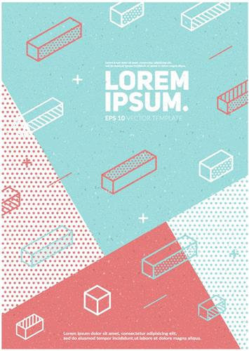
上图就基本可以把点、线、面的所有变化全部概括。下面我们来分析一下。
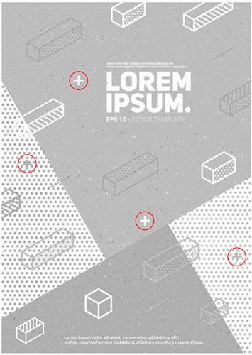
红圈里的十字元素可以看作为“点”做为整体画面中的装饰元素出现。要注意的是所谓的“点”并不只是圆形的哦。任何在画面中尺寸和面积相对最小的元素都可以看做成“点”。而画面中的小圆点既可以看做“点”，也可以看作“面”。所以连点成面也是没错的。
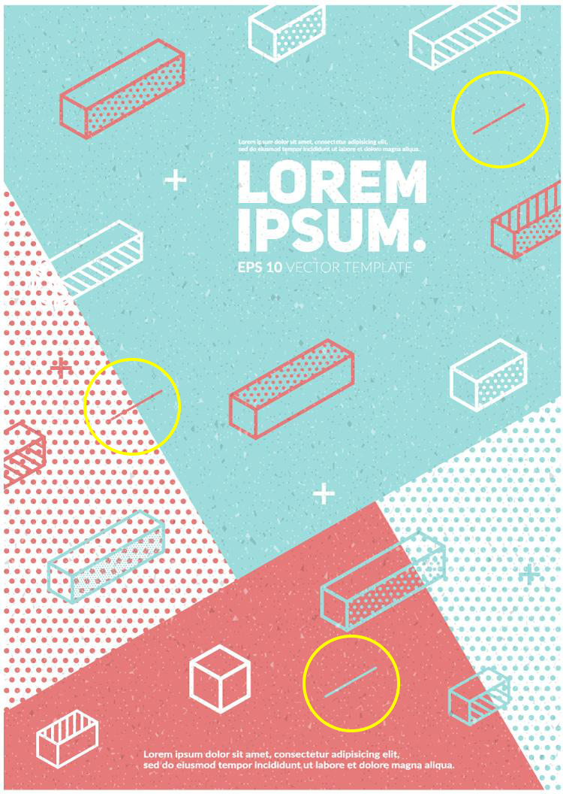
黄色圈里的线大家认为是什么？我认为它并不是线而是点。为什么呢？因为无论从它在画面中的占比还是所起到的作用来看，它都属于点的属性。而线在哪？在绿色块和红色块的交界处。还有色块的边界处。而这正说明了“线”的一个重要的用途——分割。画面中的“线”把整个画面分割成了4个大小不一的区域，这种分割让画面更加有趣味性也更加有层次感。
而线分割出来的4个区域也就是元素“面”。
这个图例不仅说明了点线面的几个重要的特征，也证明了点线面并不会因为它的形状而固定的，而是会不断变化的。
最后总结一下点线面的一些特点：
点：是最有装饰性的元素，因此大多情况下在画面中起到装饰作用。
线：除了装饰作用外还起到对画面的分割、元素的穿插和对视觉引导的作用。
面：往往起到稳定画面和承载重要信息的作用。
另外要注意的是：点线面是组合使用的，想想看没有面的衬托又怎么能显示出点和线的特征呢？
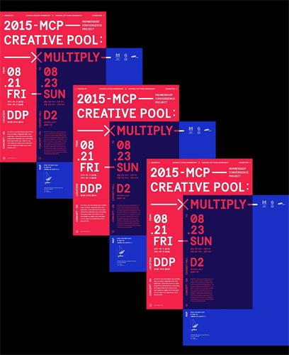
通过这些设计案例我们可以分析并总结出，有效的利用点线面的组合可设计出层次丰富的作品。而我们要如何做呢？——置换临摹。借鉴好的设计作品的点线面的构成元素再加以利用和创新。
2. 留白
留白是我们设计中很常用的手法，留白除了让画面整洁、干净和透气外，更是对“面”的更深刻的理解和使用。现在用的非常广泛的极简设计就是在留白的处理上用的比较好的一种设计类型，这在我上一篇文章《想做出极简风格的电商设计，只需要学会这3个方法》也详细的介绍过。
我们这里再说一下留白对层次的影响，先看几个设计案例。
上面的几个设计作品的共同特点就是有大量的设计留白，并且在留白的同时对画面的层次进行了处理，例如留白与主图之间的大小对比，标题与补充性文字之间的对比。
将上图分成背景层，留白层，主体模特层，标题文案层和功能文案层。从这里我们就能看出这幅设计的层次是如何设计的了。大家也不妨把自己喜欢的设计这样分层解构，来研究一下设计的层次。
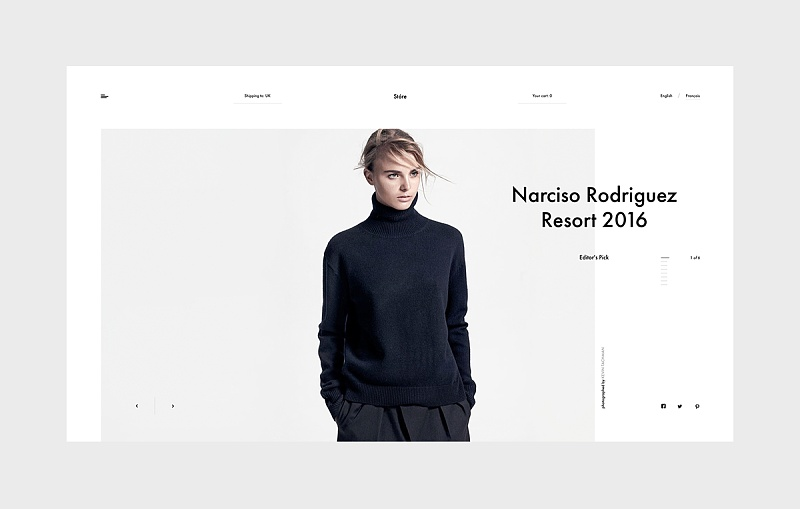
3. 在摄影中找层次
现在的设计中，摄影图片的使用也是越来越多了，尤其是质量高的摄影作品往往能最大限度的提高设计的品质。但是这是为什么大家想过吗？其中一个原因是摄影中也存在着层次。
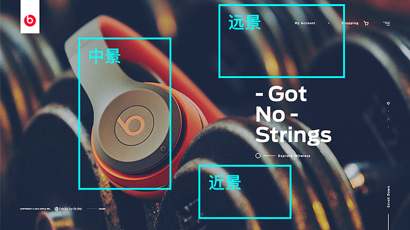
这个耳机大家熟悉吧，这就是用摄影的方式来做的，并且其中近景、中景、远景三个层次全都有。不仅看起来画面非常细腻丰富，而且也品质感十足。
但是如果图片层次少怎么办？很简单，我们可以使用文字来做为图案元素来增加画面层次。
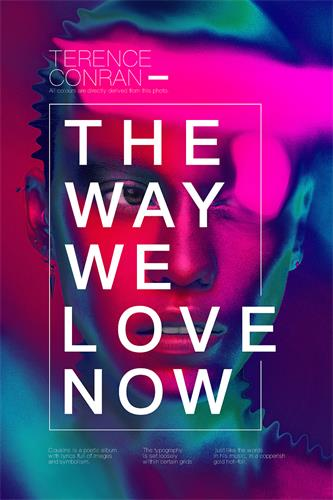
二. 色彩的层次
1. 颜色的对比
使用对比色和反差大的颜色来设计也是增加层次感的一个常用方法，因为有非常强烈的颜色对比，画面的冲击力会非常强烈，给人们的视觉观感也会更加刺激。
黑黄对比是非常经典配色方案，虽然只有两个颜色，但是通过画面中的文案和图片的组合也会显得非常丰富，在这种极简的配色中更加需要对点线面的合理运用，否则会显得有些单调。
从上面的设计来看，设计师在用黑黄配色的时候又用了黄色的对比色——蓝色，这样既可以让画面的颜色更加丰富不会单调，又会让画面中的一些重要元素凸显出来，起到强调作用。
黄蓝配色和红绿配色也是经常用到的经典配色，上面两个案例可以看到，黄蓝配色多用饱和度比较高，这样显得年轻时尚有科技感，而另一个设计是红绿蓝的配色，饱和度较低，显得更加复古和深沉。
2. 渐变色的流行
渐变色已经流行了几年，今年淘宝的手机app也是以渐变色来设计的，可见渐变色的使用范围也是越来越大了。而渐变色本身就具有层次丰富的特点，因此，使用渐变色加上合理的点线面元素的搭配会在具有冲击力的同时最大限度的丰富画面的层次。
在我们日常的设计中渐变色的使用还是需要更加精心的选择颜色的色值，一般来说会选择同色渐变、邻近色渐变和对比色渐变。而渐变的颜色数量也不宜超过2种。2种以上的渐变色就需要非常强的控色能力来驾驭了。（我这里说的是在同一渐变色里的2种以上的颜色哦）
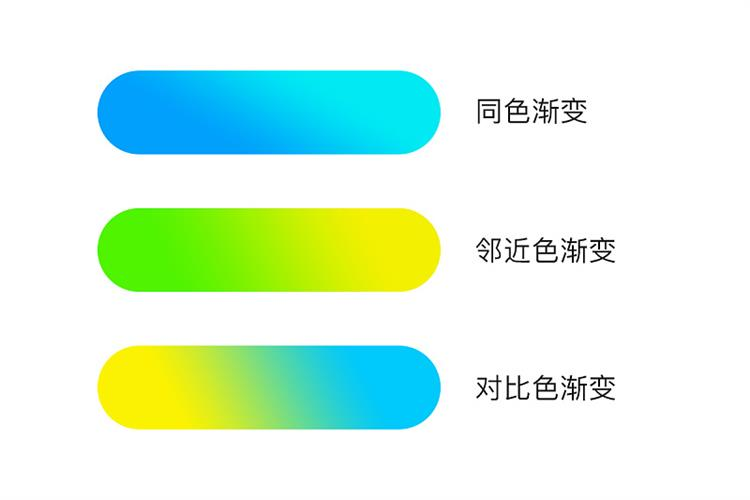
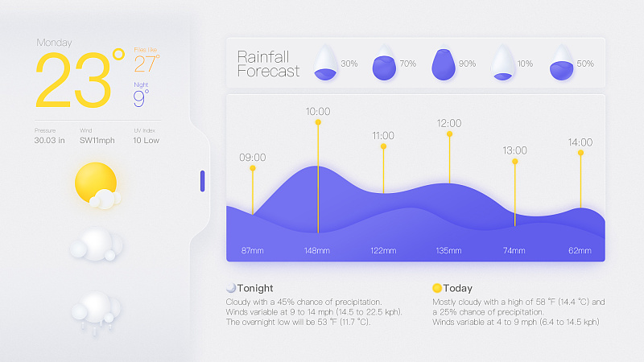
渐变色的使用大多都出现在UI设计中，而随着UI设计的发展，Web端的设计，无论是网页还是电商也有很多借鉴UI设计的设计方法和配色方法。
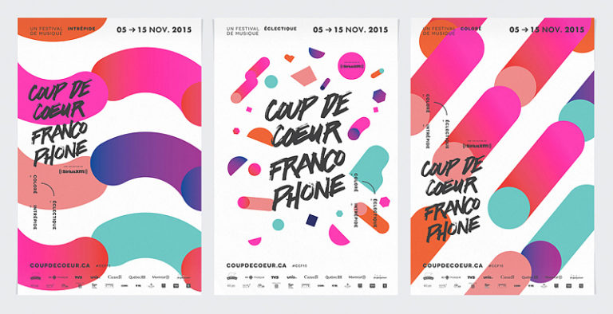
渐变色的配色是可以搭配使用的，例如上图，都属于同色渐变，但是这样使用有一个规则，就是互相搭配的几个渐变色的饱和度要基本一致，否则会出现颜色“花”的问题。
3. 多种颜色搭配的控制
对于多颜色的设计我们要做的就是控制饱和度和明度，尽量使各个颜色的饱和度和明度保持协调的一致。无论是清淡的中国风，还是浓烈的欧美风，都会让画面丰富有层次的同时不会“乱掉”、“花掉”。
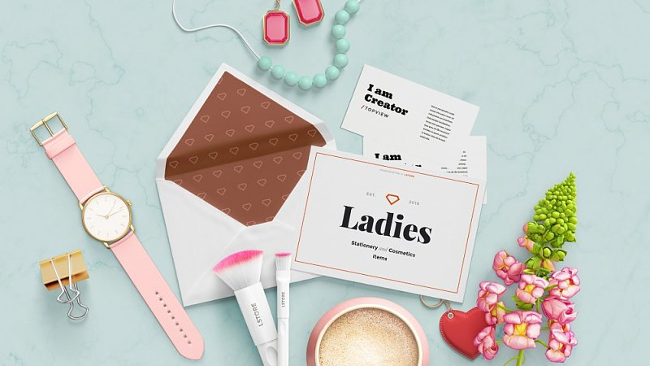
我们可以看到，上图例里的颜色非常多，但是为什么我们会感觉非常丰富而又有层次呢？没错，就是饱和度和明度的控制到位。
三. 文字的层次
1. 字体的对比
字体是我们设计中必须使用并且比较难的一个环节，但是正是这个让大家比较闹心的环节会使画面的层次变得异常丰富，即使在只有文字没有图案的时候，只要排版合理也可以得到惊人的效果。
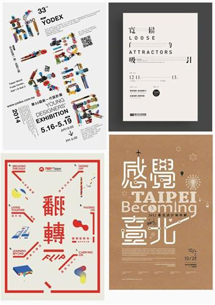
不同的字体表达不同的意境和涵义，尤其是中文字体传承几千年，每一个字都有特定的涵义。而西文主要是以衬线体和非衬线体的字形装饰的变化为主。时而粗犷，时而纤细。
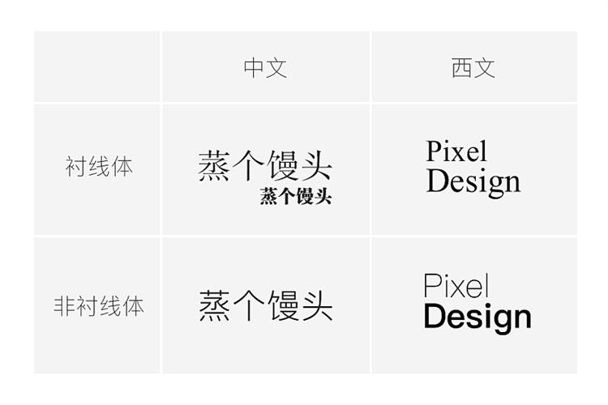
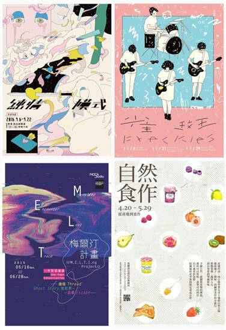
2. 文字的对比
这里的对比包括文字的字体、大小、粗细、颜色等等。为什么单单要挑对比来说呢？因为对比是最能拉开并体现层次的方法，我们逐个来说。
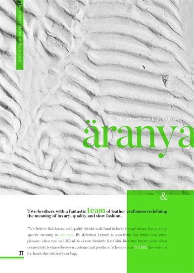
字体的颜色，上面两个aranya的海报是个系列，分别把主题文字aranya的颜色换成绿色和蓝色，一方面可以增加文案的层次感，另一方面可以与视觉主体的颜色统一。下面的案例大家可以试着分析一下。
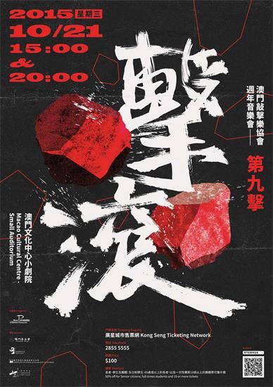
最后说一说对齐，对齐是使画面更加有秩序，看起来更合理且舒服。我们用这个海报来分析一下。
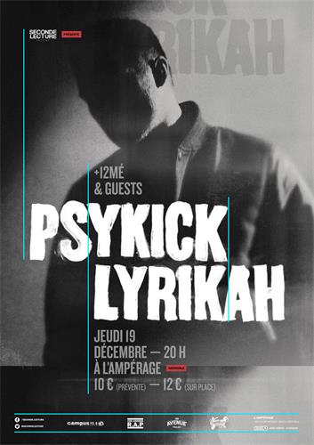
看这些蓝色的线，就是这幅海报的对齐方式。
总结：其实层次是在综合运用了点线面的分割，色彩的搭配和文字的排版而形成的，并且在大小比例，颜色选择，对齐等这些细节上精益求精，层次自然立现。

济南海右博纳品牌营销咨询有限公司
Copyright 2001-2019 All Rights Reserved Sivibrand.
王伟品牌顾问微信